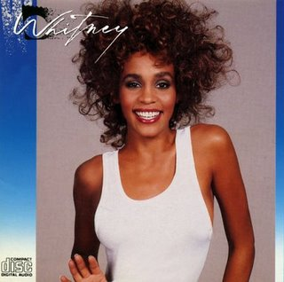
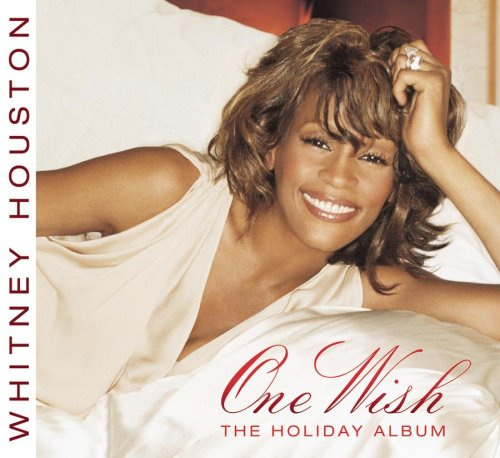
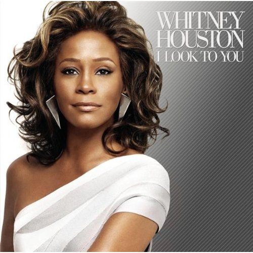

Discografia de Whitney Houston
Whitney Houston (álbum)-(1985)
Whitney Houston é o álbum de estreia da cantora norte-americana Whitney Houston. Foi lançado em 14 de fevereiro de 1985 pela Arista Records.
Inicialmente teve uma recepção comercial lenta, mas começou a ficar mais popular no verão de 1985. Ele chegou ao topo da Billboard 200, ficando por
14 semanas em 1986, teve três singles número um "Saving All My Love for You", "How Will I Know" e"Greatest Love of All" ,
e tornou-se o primeiro álbum de estreia de uma artista feminina a ter três singles número um na Billboard Hot 100.
Whitney (álbum) (1987)
Whitney é o segundo álbum de estúdio da cantora pop Whitney Houston, lançado em 20 de junho de 1987,considerado
pela crítica melhor do que seu trabalho anterior.Em sua primeira semana o álbum foi #1 no Hot 200 Albuns, fazendo com que Whitney
tivesse o ilustre recorde por ter o primeiro álbum de uma artista feminina a estrear no topo e o quinto no geral por
qualquer artista.

I'm Your Baby Tonight (1990)
I'm Your Baby Tonight é o terceiro álbum de estúdio da cantora americana de pop/R&B Whitney Houston, lançado pela Arista Records
em 6 de novembro de 1990.Esse novo trabalho não foi muito aceito pelos fãs por tratar de um conteúdo bem diferente de
seus dois trabalhos anteriores. As músicas que compõem o álbum são bem mais dançantes ou com influências mais distintas do R&B,
porém gerou dois #1’s consecutivos "I'm Your baby Tonight" e "All The Man That I Need".Foram também lançadas como singles:
"Miracle", "My name Is Not Susan" e a envolvente "I Belong to You".

Just Whitney... (2002)
Just Whitney... é o quinto álbum de estúdio da cantora Whitney Houston, lançado em 10 de dezembro de 2002.
Foi seu primeiro álbum de estúdio em quatro anos e seu primeiro depois de assinar um novo contrato de 100 milhões de dólares com a Arista Records,
em 2001.O álbum estreou em 9º lugar na Billboard 200, e em terceiro na Billboard R&B/Hip-Hop Albums, vendendo 205.147 de cópias na primeira semana.
O álbum passou 26 semanas nas paradas e foi certificado com platina pela RIAA, por vendar superiores a um milhão de cópias nos Estados Unidos.
Em outros países, o álbum teve um desempenho moderado. Até junho de 2003, o álbum tinha vendido 2 milhões de cópias mundialmente.
One Wish: The Holiday Album (2003)
One Wish: The Holiday Album é um álbum de Natal lançado por Whitney Houston, e sendo o sexto álbum de estúdio lançado a 17 novembro de 2003.
O álbum trouxe alguns clássicos natalinos como "Have yourself a Merry Little Christmas", "The First Noel", "O Holy Night" e "Little Drummer Boy"
com a participação de sua filha Bobbi Kristina. A faixa inédita ficou por conta de "One wish", música que dá nome ao álbum.

I Look to You (2009)
I Look to Youé o sétimo e último álbum de estúdio da cantora americana de R&B e pop Whitney Houston. Foi lançado em 28 de Agosto de 2009
pela Sony Music na Europa, e em seguida em 31 de Agosto pela Arista Records nos Estados Unidos antes de ser lançado pela RCA Records no Reino Unido
em 19 de Outubro. Este é o primeiro álbum de estúdio de Houston desde One Wish: The Holiday Album em 2003.

Lista de prêmios e indicações recebidos por Whitney Houston
| Ano |
Categoria |
Indicação |
Resultado |
| 1986 |
Melhor Performance Vocal Pop, Feminina |
"Saving All My Love for You" |
Venceu |
| 1988 |
Melhor Performance Vocal Pop, Feminina |
"I Wanna Dance with Somebody (Who Loves Me)" |
Venceu |
| 1994 |
Álbum do Ano |
The Bodyguard: Original Soundtrack Album |
venceu |
| 1994 |
Gravação do Ano |
"I Will Always Love You" |
venceu |
| 1994 |
Melhor Performance Vocal Pop, Feminina |
"I Will Always Love You" |
venceu |
| 2000 |
Melhor Performance Vocal de R&B Feminina |
"It's Not Right But It's Okay" |
venceu |
| 2013 |
Grammy Hall of Fame |
"Whitney Houston" |
venceu |
Curiosidades Sobre Whitney Hosuton
- Na infância, a pequena Whitney sofreu um acidente. Durante uma brincadeira, ela perfurou acidentalmente o céu da boca com um
gancho afiado. Os médicos advertiram que se a ferida não cicatrizasse, a menina poderia nunca
mais falar.
- Aos 5 anos Whitney aprendeu a tocar piano
- No entanto, inicialmente Whitney começou a brilhar como modelo. A bela jovem foi notada e
apareceu na capa de várias revistas populares.
- Em 2019 a melhor amiga Robyn Crawford, fala sobre o romance com a cantora
- O singleYou Give Good Love atingiu o topo das paradas e impulsionou as vendas do primeiro
disco da cantora, e assim Whitney começou a trilhar seu caminho dentro da indústria do
entretenimento
- A cantora tinha estimado uma fortuna de 40 Milhões de doláres,quando faleceu deixou cerca de
20 milhões doláres para a filha Bob Christina.
- Devido ao fato de Whitney ter alcançado uma imensa popularidade como cantora pop, na década de 1980 críticos afro-americanos
frequentemente a acusavam de tentar conquistar o “público branco”, chamando suas músicas de
“muito brancas”. Essas críticas sempre magoaram muito a cantora durante toda a sua carreira.
- Havia muitos rumores sobre a vida pessoal de Whitney. Por exemplo, muitos falavam que ela
ra secretamente apaixonada por Michael Jackson e ele por ela, mas algo os impedia de ficarem juntos
- O casamento de Whitney com Bobby Brown durou 15 anos. Muitos jornalistas escrevem que a cantora tinha uma boa reputação antes de
seu relacionamento com Bobby. Pois o seu casamento foi repleto de escândalos constantes, o casal chegou a prestar contas com a
justiça pelo uso de substâncias ilegais, e Whitney acusou o marido de traí-la. A saúde da cantora piorou e ela chegou a confessar
o vício em álcool e drogas, fazendo tratamento inúmeras vezes para tentar se curar.
- A cantora morreu um dia antes da cerimônia de premiação do Grammy, então, o roteiro da premiação foi um pouco alterado e o evento foi
dedicado a ela. Pessoas do mundo inteiro compareceram ao funeral de Whitney.